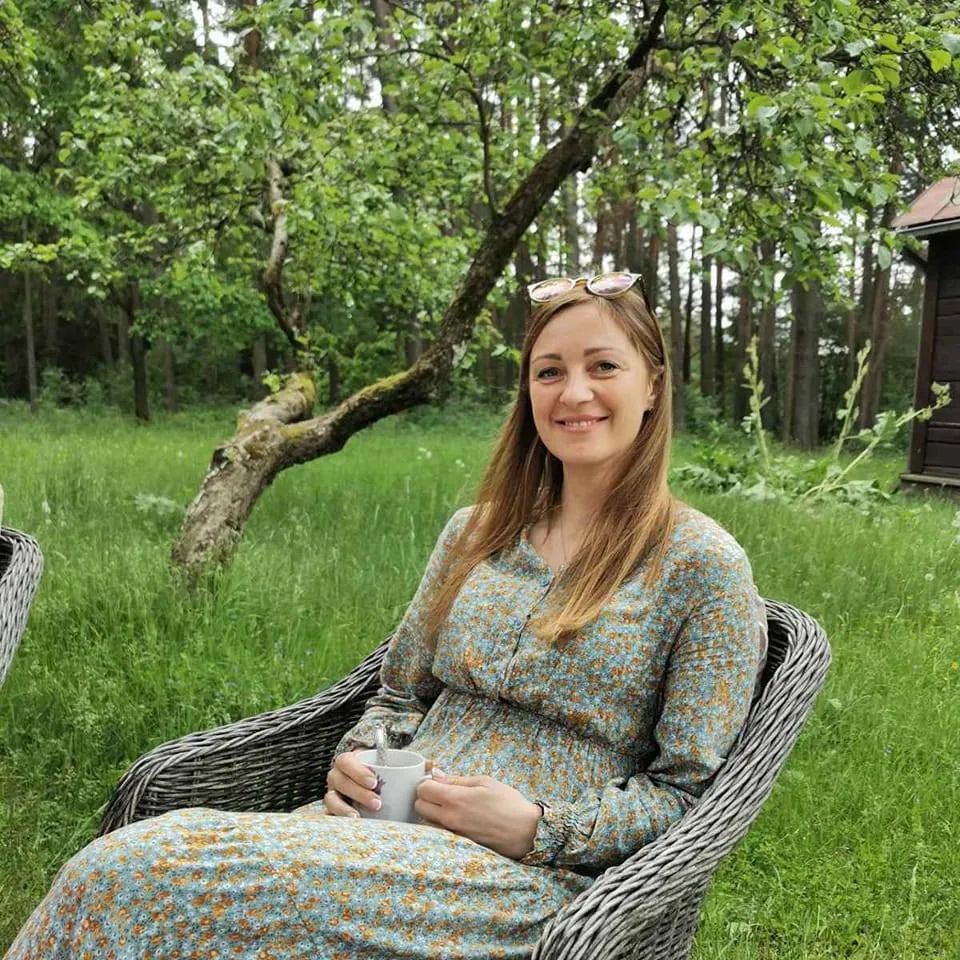

Renginio formatas
Remiantis tarptautiniais tyrimais (Pew Research Center, General Social Survey, ONS), vyrams nuo 35 metų ypač svarbūs artimi santykiai su partnere ir pasitikėjimu grįsti ryšiai su draugais.
Norint sukurti artumą santykiuose, būtinas emocinis kontaktas. Tačiau dažnai dėl šiuolaikiško gyvenimo ritmo ir nuovargio tam nebelieka nei laiko, nei vidinių resursų. Mano sukurtas „mafijos“ žaidimo formatas kviečia trumpam sustoti ir suteikia galimybę jaukiai bei smagiai praleisti laiką kartu. Šis formatas padeda atgaivinti ar sustiprinti santykius, taip pat pamatyti save ir draugus iš naujos perspektyvos.
Renginys yra individualiai pritaikomas ir iš anksto suderinamas su klientu. Atsižvelgiama į svečių profesijas bei asmenines savybes.
Renginio organizavimas
Atsižvelgiant į jūsų poreikius, galite rinktis tik žaidimo arba viso renginio organizavimą. Į pasiūlymą gali būti įtraukta vietos paieška vakarienei ir mafijos žaidimui, pagalba sudarant vakaro programą, renginio koordinavimas vietoje, dekoravimas, vedėjo paslaugos bei foto ir video paslaugos. Tačiau jei jau turite savo vietą ir viską esate suplanavę, pakanka pasirinkti žaidimo organizavimo paslaugų paketą.
Kodėl toks gimtadienio formatas gali būti tinkamas?
Klientų atsiliepimai:
Snežana
"Didžiausios rekomendacijos norint smagiai praleisti laiką. Begalo dėkojų Olegui už "Mafijos" žaidimo organizavimą per vyro gimtadienį! Visiems svečiams labai patiko, įspūdžiai liko ilgam. Vedėjas labai profesionalus ir draugiškas, mokantis užvaldyti jūsų dėmesį. Sėkmės!"

Jūratė
"Švenčiau savo jubiliejų ir draugėms pasirinkau MafiaIn žaidimą. Nuoširdžiausios rekomendacijos visų šventės dalyvių vardu MafiaIn komandai už profesionalumą, dėmesingumą, kokybę! Mes tiek juokėmės, tiek pakilių emocijų išgyvenome tą vakarą. Didžioji dalis šventės dalyvių nebuvo pažįstamos, tačiau šio žaidimo dėka mes visos įsitraukėme, aktyviai dalyvavome, kūrėme gyvenimiškas istorijas, narpliojome detektyvinius voratinklius. Įtrauku buvo žaisti, bet ne mažiau įdomu ir iš šalies stebėti žaidimą (nes matomi žaidimo veikėjų vaidmenys). Maloniai nustebino žaidėjų pristatymas (iš anksto siunčiau vedėjams po kelias užuominas apie drauges), kūrybiškai pakvietė žaidimo dalyves prisijungti. Žaidimą praturtino rekvizitai (kaukės ir ginklai), o vedėjų charizmatiškumas leido įsijausti į vaidmenis. Apie šį gimtadienį mes vis dar kalbame. Buvo nereali patirtis. Rekomenduoju vesti, dalyvauti, organizuoti tiek kolektyvams apšildyti, tiek komandoms suburti."

Simona
"Kviesdamas žaidime pasitelkti intuiciją, Olegas pats labai kruopščiai ir nuoširdžiai išjaučia kiekvieną dalyvį, kuria jaukumą ir taip sudaro sąlygas ne tik azartiškai praleisti laiką, bet ir suteikia galimybę norintiems giliau pažinti save."
Kaip vyksta renginys?
Renginio trukmė – apie 3 valandas.
Kol svečiai renkasi, rekomenduoju juos pasitikti užkandžiais ir lengvais gėrimais. Kai visi svečiai susirenka - prasideda vakarienė. Po vakarienės vyksta svečių pristatymas ir žaidimo pradžia.
Numatytos 3 žaidimo sesijos - po kiekvienos jų daroma pertrauka emocijoms ir įspūdžiams aptarti. Trys sesijos yra optimalus skaičius, leidžiantis dalyviams perprasti mafijos žaidimo taisykles ir pradėti mėgautis procesu. Po žaidimo - trumpa vedėjo apžvalga ir nominacijų įteikimas.
Dalyvių skaičius:
- Kiekvienoje sesijoje prie vieno stalo gali dalyvauti iki 10 svečių
- Jei svečių yra 30 – kiekvienas sudalyvaus po vieną kartą.
- Jei svečių 10 – kiekvienas sudalyvaus tris kartus.
- Jei svečių 20 – kai kurie (tie, kurie iškris pirmieji) sudalyvaus du kartus, kiti – vieną.
Jei gimtadienio tikslas - jaukiai pabūti, geriau pažinti save ir draugus, rekomenduoju vieno stalo formatą. Jei svečių daug ir norisi tiesiog smagiai praleisti laiką – siūlome dviejų stalų formatą (renginį veda du vedėjai).
Sukurkite savo renginį
Pasirinkite stalų skaičių, renginio datą ir pageidaujamas paslaugas
Skaičiuoti kainąJei ieškote, ką veikti Vilniuje, Kaune ar Klaipėdoje, kviečiu susipažinti su pasiūlymu ir kartu sukurti erdvę kokybiškam poilsiui su draugais ar šeima.